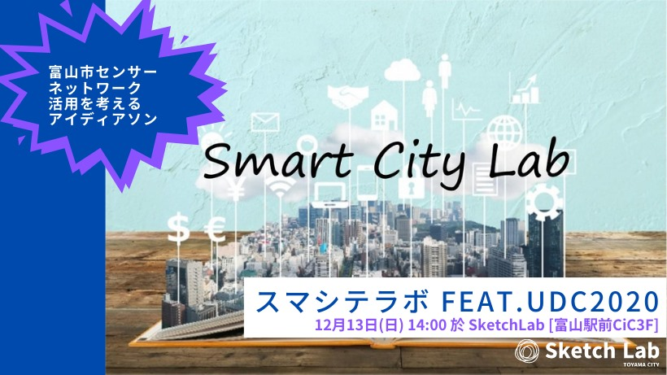
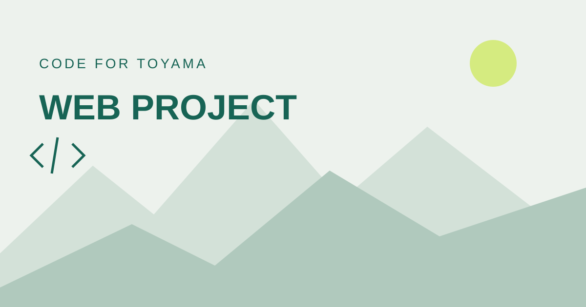

2026 / 1015木曜日
AI開発をやってみよう/UDC2026富山 市民IT開発部
WindowsパソコンにAI助手アプリ（OpenCode Desktop）を入れて、安全設定をして、 富山市のオープンデータを使った小さなWEBアプリを1つ作って、ブラウザで見るところまで体験する 90分のハンズオンです。 初参加・パソコンが苦手な人向け。事前準備なしでOK。
connpassへ ↗
CIVIC TECH COMMUNITY IN TOYAMA
まちへの想いと、テクノロジー。
一人ひとりの「やってみたい」が、
富山を変える力になる。
MEET & JOIN
WindowsパソコンにAI助手アプリ（OpenCode Desktop）を入れて、安全設定をして、 富山市のオープンデータを使った小さなWEBアプリを1つ作って、ブラウザで見るところまで体験する 90分のハンズオンです。 初参加・パソコンが苦手な人向け。事前準備なしでOK。
connpass情報取得：。募集状況は各イベントの案内をご確認ください。
いつものAIの使い方を持ち寄って、仲間の工夫に出会う交流イベント。Code for Toyama Cityが講師を務めます。
主催：とやま未来共創チーム
開催状況・参加条件は各イベントの案内をご確認ください。
ABOUT US
Code for Toyama Cityは、市民とテクノロジーで富山の課題に取り組むシビックテックコミュニティです。
暮らしの中の小さな不便、地域の魅力、データから見える発見。さまざまな立場の人が集まり、アイデアを出し合い、手を動かしながら解決の方法を探しています。
エンジニアも、デザイナーも、学生も、地域づくりに関心のある方も。大切なのは、富山をちょっと良くしたいという気持ちです。
市民がテクノロジーを活用して、地域や社会の課題に取り組むこと。アイデアを出すことや、身近な困りごとを伝えることも、その始まりです。
WHAT WE DO
アイデアを交わすところから、
地域で使える仕組みづくりまで。

シビックテックナイトで、地域のことや気になる技術について意見交換。新しいつながりをつくります。
オープンデータや生成AIに触れるワークショップ。データや技術を、暮らしに近いテーマで学びます。
アイデアソンやハッカソンで、地域の課題を解決するアイデアを考え、形にしていきます。
OPEN PROJECTS
Code for Toyamaの公開リポジトリから、最近コミットされたプロジェクトをご紹介します。
 PROJECT 01
PROJECT 01
富山空港を応援する非公式ファンサイト。飛行機と新幹線の移動時間の比較、フライトマップ、空港へのアクセスや利用者の投稿を紹介します。
 PROJECT 02
PROJECT 02
とやま市民IT開発部の活動案内。AIとオープンデータを使って身近な困りごとを解決するアプリづくりを学ぶ、UDC2026富山県ブロックの参加案内や教材をまとめています。

PROJECT 03国勢調査と住民基本台帳の人口をグラフで比較する、富山市人口ビューアーの試作版。統計による人口の数値の違いを確認できます。
GitHub情報取得：
YOUR FIRST STEP
技術がなくても、初めてでも。
あなたの視点が、活動の力になります。
connpassでテーマや開催日をチェック。興味のあるものから選んでみてください。
対象者、会場、参加費、持ち物を確認し、イベントの案内に沿って申し込みます。
まずは話を聞くところから。気になることや、やってみたいことを持ち寄りましょう。
地域づくりに関心のある方も歓迎しています。アイデアを出す、地域の事情を伝える、デザインを考えるなど、関わり方はさまざまです。イベントごとの対象者は申し込みページをご確認ください。
お一人での参加も歓迎です。初めての方は、関心のあるテーマのイベントから参加してみてください。
イベントによって異なります。参加費、必要な機材や持ち物は、各イベントの申し込みページに掲載している案内をご確認ください。
FacebookやXで活動情報をチェックできます。connpassのグループをフォローして、次の開催情報を受け取る方法もあります。
LET’S MAKE IT TOGETHER
まずは、気になるイベントをのぞいてみませんか。
STAY CONNECTED